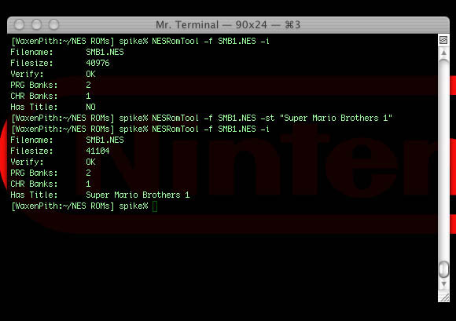

Similar to MP3's id3 tags, NES ROMs have title tags.
The NESRomTool has functions for dealing with titles.

To see what the title of a ROM is (if it has one), do the following:
NESRomTool -f <pathToROM> -pt
[ NESRomTool -f SMB1.NES -pt ]
To set the title:
NESRomTool -f <pathToROM> -st <title>
[ NESRomTool -f SMB1.NES -st "Super Mario Brothers 1" ]
You can also completely remove the title data:
NESRomTool -f <pathToROM> -rt
[ NESRomTool -f SMB1.NES -rt ]